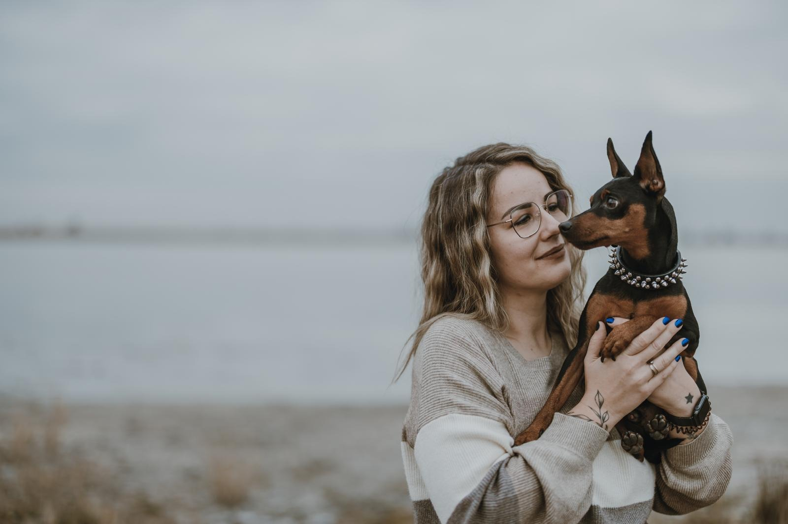

Über 3Deko
Ein Drucker, viele Ideen – und jede Menge Deko
Angefangen hat alles mit einem 3D-Drucker und der Frage: Was kann man damit eigentlich alles machen? Also habe ich ausprobiert, getüftelt und immer neue Ideen gedruckt. Da ich Deko liebe, war schnell klar, in welche Richtung es geht. So ist 3Deko entstanden. Heute mache ich Deko, die mir selbst gefällt – und hoffentlich auch dir!
„Deko ist für mich kein Beiwerk, sondern ein kleines Stück Freude, das man jeden Tag neu sehen darf."
Cindy Andert
Aus dem schönen Seewinkel

Was mir wichtig ist
Kleine Auflage, große Sorgfalt
Handarbeit trifft Technik
Jedes Objekt wird von Hand dekoriert, nachbearbeitet und geprüft, bevor es den Weg in den Shop findet.
Bewusste Materialwahl
Ich setze bevorzugt auf recyceltes Filament und minimiere Ausschuss durch sorgfältige Druckplanung.
Regional & persönlich
Gedruckt, dekoriert und verpackt im Seewinkel – mit kurzen Wegen und direktem Kontakt zu dir.
Lust, meine Objekte kennenzulernen?
Stöber im Shop oder schreib mir – ich freue mich über Nachrichten.